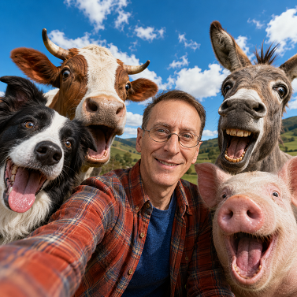

SELFIE CON ANIMALES

Guía rápida de uso
¿Qué hace este prompt?
Este prompt genera una selfie grupal hiperrealista utilizando la fotografía de referencia del usuario para mantener su identidad con la máxima fidelidad. El usuario aparece en el centro de la imagen rodeado únicamente por la especie animal indicada.
El prompt controla automáticamente:
- La identidad del usuario (rostro, cabello, ropa, accesorios, etc.).
- La cantidad exacta de animales.
- Que todos sean de la misma especie.
- Una composición tipo selfie con teléfono.
- Un estilo realista, divertido y de alta calidad.
Requisitos
- Adjunta una fotografía clara del usuario.
- Cambia únicamente los campos ANIMAL y CANTIDAD DE ANIMALES.
- No modifiques el resto del prompt.
Resultado esperado
Obtendrás una imagen en formato 9:16 donde:
- El usuario aparece sonriendo en el centro.
- Hay exactamente la cantidad de animales indicada.
- Todos pertenecen a la misma especie elegida.
- Cada animal tiene una pose y expresión diferente.
- La escena parece una selfie real tomada con un teléfono móvil en un entorno natural.
Prompt para copiar
══════════════════════════════════════
VARIABLES (Solo modificar estas dos líneas)
ANIMAL: {ANIMAL}
CANTIDAD DE ANIMALES: {NUMERO_DE_ANIMALES}
══════════════════════════════════════
Utiliza la fotografía del usuario como referencia absoluta para recrear con máxima fidelidad su identidad.
Conserva exactamente sus rasgos faciales, tono de piel, peinado, color de cabello, complexión, edad aparente y expresión natural. Reproduce también con precisión la ropa, colores, estampados, accesorios y calzado que viste en la fotografía de referencia.
Genera una divertida selfie grupal donde el usuario aparece en el centro de la imagen rodeado exclusivamente por los animales definidos en las VARIABLES.
REGLA ABSOLUTA
• Deben aparecer exactamente {NUMERO_DE_ANIMALES} individuos.
• Todos los individuos pertenecen exclusivamente a la especie {ANIMAL}.
• No está permitido incluir ninguna otra especie animal bajo ninguna circunstancia.
• No agregar animales de fondo.
• No agregar mascotas adicionales.
• No agregar aves, insectos, reptiles ni criaturas fantásticas.
• Si aparece cualquier animal distinto de {ANIMAL}, la imagen es incorrecta.
Cada uno de los {NUMERO_DE_ANIMALES} {ANIMAL} debe ser claramente reconocible y diferente de los demás mediante expresiones, poses y personalidad propias, manteniendo siempre la misma especie.
Todos los {ANIMAL} realizan expresiones exageradamente divertidas: bocas muy abiertas, lenguas afuera cuando sea anatómicamente posible, ojos muy expresivos, muecas cómicas y actitud juguetona, como si todos estuvieran posando felices para una selfie.
El usuario sonríe naturalmente mientras sostiene el teléfono móvil para tomar la fotografía.
La captura debe parecer una selfie real tomada con un teléfono móvil.
Características de cámara:
• Cámara frontal.
• Lente gran angular.
• Ángulo ligeramente bajo.
• Todos mirando directamente a la cámara.
• Composición natural típica de una selfie grupal.
• Algunos {ANIMAL} pueden inclinar la cabeza para entrar mejor en el encuadre.
Escenario natural al aire libre con suaves colinas al fondo, cielo azul intenso y nubes blancas.
Estilo hiperrealista con un ligero toque fantástico y humorístico.
Iluminación natural de día.
Colores vibrantes.
Excelente rango dinámico.
Piel realista.
Pelajes, plumas, escamas o cualquier textura correspondiente a la especie {ANIMAL} extremadamente detailedos.
Profundidad de campo natural.
Calidad fotográfica profesional.
Todos los sujetos deben aparecer completamente enfocados y perfectamente integrados en la escena.
Relación de aspecto 9:16.